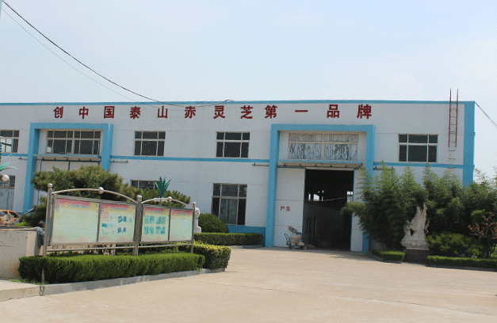
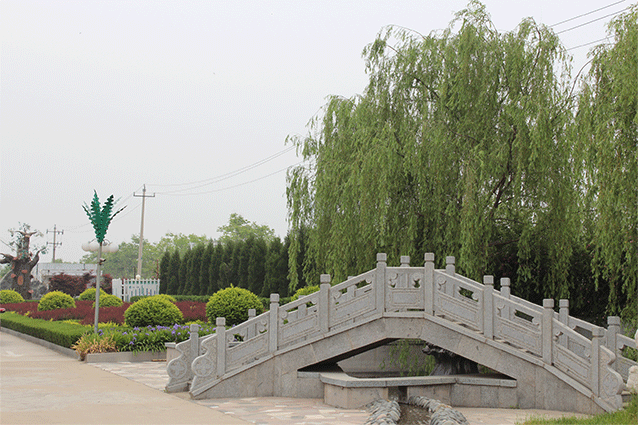

中信生物科技有限公司座落在“五岳独尊”的泰山脚下，泰安市高新技术开发区内，是一家集科研、培育、加工、销售为一体的泰山赤灵芝保健品专业生产厂家。
公司聘请上海农科院、山东大学等科研机构专家教授作为公司的顾问团队，始终跟踪和引领灵芝养生科研的前沿，为公司生产高品质的灵芝保健品导航。
公司通过ISO9001国际质量管理体系认证和GMP认证。先后被授予“山东食用菌十大品牌”、“泰安市农业产业化龙头企业”、“山东省旅游商品研发基地”、“最具潜力与竞争力品牌”、“中国企业诚信文化建设先进单位”等荣誉和称号。
中信生物成立二十年来，始终以“用心爱人”为企业理念，坚持“科技先导、品质过硬”的宗旨，追求“人人享有健康”的目标，努力打造世界健康品牌！

